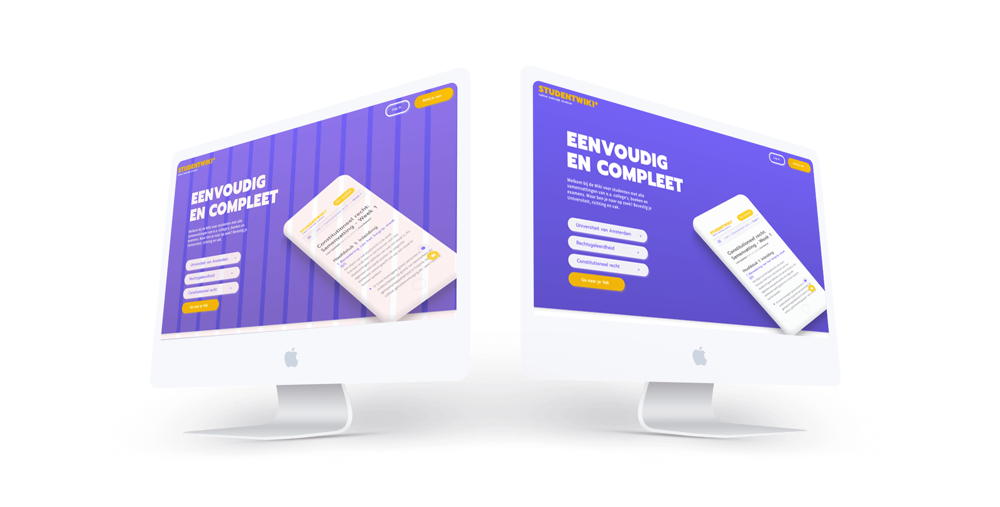

Kwaliteit en eenvoud
Welkom bij de Wiki voor studenten met alle samenvattingen van o.a. college's, boeken en examens. Waar ben je naar op zoek? Bevestig je Universiteit, richting en vak.


*
WAAROM STUDENTWIKI
Wij
Bieden je de best mogelijke samenvattingen van jouw studiestof aan. Maar hoewel wij ons best doen alles optimaal aan te bieden, kan het zijn dat er onvolledigheden of foutjes in zitten. Dus:
Jullie
Kunnen alles verbeteren, aanvullen of perfectioneren. Zo heb je geen last meer van statische, slechte of onvolledige samenvattingen. Twee weten immers meer dan één, dus:
Samen
Zorgen we ervoor dat alle studenten de beschikking krijgen over de meest volledige samenvattingen. Voortaan geen zoektochten, onvoldoendes en stress meer. Alleen nog StudentWiki!